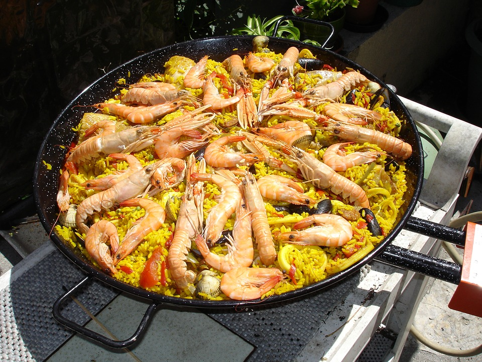
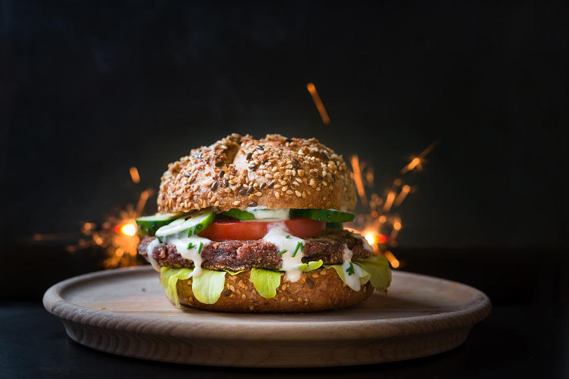
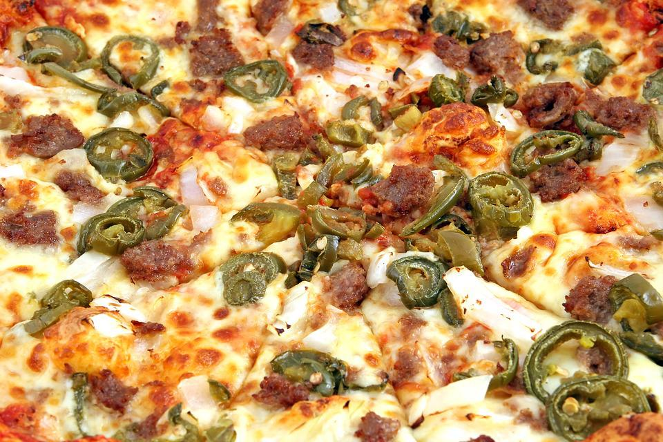

Capuchin IPA - We took copious amounts of Phoenix, Chinook, and Aurora Hops, then added ginger and vanilla, to bring you and IPA that will have you screeching for more.
Big Banana Hefeweizen - A traditional hef, with a twist. We ramped up the banana flavor and aroma, to the point that you'll be going ape for this beer!
Primate Peanut Butter Porter - Who doesn't love some nutty peanut butter flavor? This beer will have you looking for the strawberry jelly.
Silverback Imperial Pale - Named for the strongest gorilla on the planet, this is the strongest imperial pale ale that we've ever brewed. At a whopping 12.6%, you'll be pounding your chest in no time.
Jungle Curry - A semi-spicy green curry chicken. A perfect way to warm up after a long day in the jungle.
Paella Extravaganza - Bring in the whole heard, for this family style seafood paella. Loaded with gulf shrimp, clams, and scallops.
Firecracker Chicken Burger - Our fried chicken burger, cranked up a notch. This one is seasoned with a base of jalapeno, serrano, and hatch peppers. For that extra bite, we threw in a bit of scorpion pepper! Topped with our homemade pickles, and house ranch, all on a roasted five seed bun.
Hatch Pepper Pizza - Since we already had the hatch peppers on hand for the Firecracker Chicken Burger, we decided they'd be great on a pizza. Loaded with pepperoni, bacon, and hatch peppers, this pizza is sure to please.